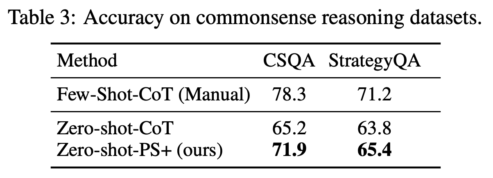
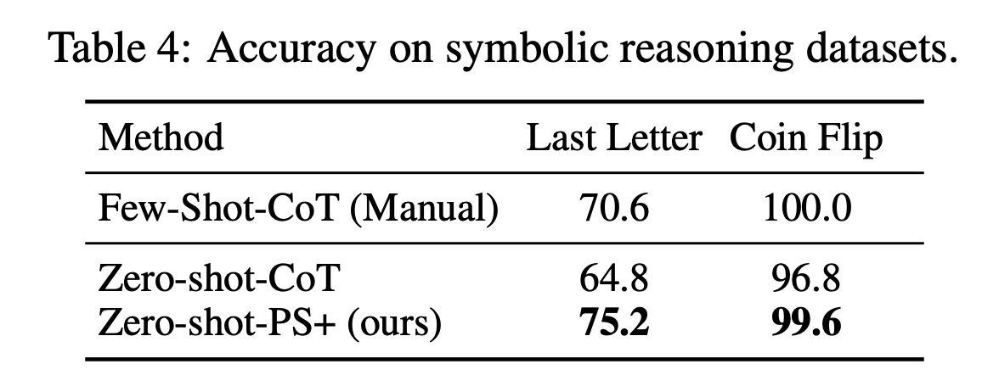
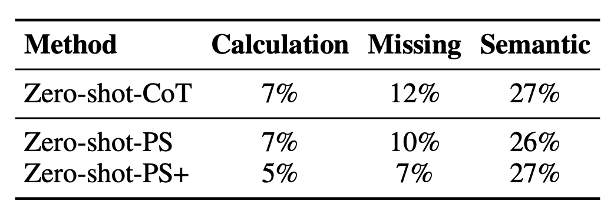

Paper Summary: Plan-and-Solve Prompting
Background
In this notebook I’ll summarize the paper Plan-and-Solve Prompting: Improving Zero-Shot Chain-of-Thought Reasoning by Large Language Models (Lei Wang, et al) with the following questions. This exercise is part of a fastai study group assignment where we had multiple study group members present the different Chain-of-Thought papers.
This notebook has the following sections:
- What is the problem which LLMs are failing to solve?
- An overview of the prompting strategy
- An example of the XoT prompt
- Improvements on benchmarks
- Does this prompt strategy strike you as useful? What are the downsides?
- Test the prompt using a local model or API
1) What is the problem which LLMs are failing to solve?
Zero-shot-CoT (CoT = Chain-of-Thought) prompting involves appending the phrase “Let’s think step by step” to the end of a prompt and has shown to improve LLM performance on reasoning tasks when compared to zero-shot prompting.
An example of a Zero-shot-CoT prompt:
Q: After eating at the restaurant, Sally, Sam, and Alyssa decided to divide the bill evenly. If each person paid 45 dollars, what was the total of the bill?
A: Let’s think step by step.
From the abstract of this paper (emphasis mine):
Despite the success of Zero-shot-CoT, it still suffers from three pitfalls: calculation errors, missing-step errors, and semantic misunderstanding errors.
The authors address calculation errors and missing-step errors with Plan-and-Solve (PS) Prompting and PS+ Prompting. PS+ Prompting extends PS Prompting with more detailed instructions.
2) An overview of the prompting strategy
The prompting template for PS and PS+ prompting is fundamentally the same as Zero-shot-CoT
Q:
[X].A:
[T].
Where [X] contains the input problem statement and [T] is a hand-crafted instruction.
The prompting strategy extends the Zero-shot-CoT prompt by adding more detailed instructions [T] on how the LLM should answer reasoning tasks to encourage the model to devise a plan, carry out the plan and lists intermediate steps.
Plan-and-Solve (PS) Prompting
This prompting strategy replaces the Zero-shot-CoT prompt of “Let’s think step by step” with the following in order to address the issue of Zero-shot-CoT caused by missing reasoning steps:
Q:
[X].A: Let’s first understand the problem and devise a plan to solve the problem. Then, let’s carry out the plan and solve the problem step by step.
PS+ Prompting
This prompting strategy extends PS Prompting with the following instruction to address the calculation errors of Zero-shot-CoT:
“pay attention to calculation”
and the following instruction to address missing-step errors:
“extract relevant variables and their corresponding numerals”
It also includes the following instruction to enhance the LLMs ability to generate relevant and important reasoning steps:
“calculate intermediate results”
An example of the full PS+ Prompting strategy:
Q:
[X]A: Let’s first understand the problem, extract relevant variables and their corresponding numerals, and devise a plan. Then, let’s carry out the plan, calculate intermediate results (pay attention to calculation and common sense), solve the problem step by step, and show the answer.
This prompting strategy can be easily customized to solve a variety of problems other than math reasoning.
3) An example of the XoT prompt
PS Prompting
Using the same restaurant bill math problem as before, here is how it would be structured as a PS prompt:
Q: After eating at the restaurant, Sally, Sam, and Alyssa decided to divide the bill evenly. If each person paid 45 dollars, what was the total of the bill?
A: Let’s first understand the problem and devise a plan to solve the problem. Then, let’s carry out the plan and solve the problem step by step.
PS+ Prompting
And here is how it would be structured with the more detailed PS+ prompt:
Q: After eating at the restaurant, Sally, Sam, and Alyssa decided to divide the bill evenly. If each person paid 45 dollars, what was the total of the bill?
A: Let’s first understand the problem, extract relevant variables and their corresponding numerals, and devise a plan. Then, let’s carry out the plan, calculate intermediate results (pay attention to calculation and common sense), solve the problem step by step, and show the answer.
4) Improvement on benchmarks
The authors evaluated their prompting on the following:
- 6 math reasoning datasets
- AQUA: Algebraic word problems with natural language rationales.
- GSM8K: High quality linguistically diverse grade school math word problems.
- MultiArith: Math word problems requiring multiple reasoning steps and operations.
- AddSub: Addition and subtraction arithmetic word problems.
- SingleEq: Single-equation grade school algebra word problems with multiple math operations over non-negative rational numbers and one variable.
- SVAMP: One-unknown arithmetic word problems for up-to-4 grade level students.
- 2 common sense reasoning datasets
- CommonsenseQA: Multiple choice questions that require different types of commonsense knowledge to obtain the correct answers.
- StrategyQA: Questions requiring multi-step reasoning but the reasoning steps are not given.
- 2 symbolic reasoning datasets
- Last Letter Concatenation: Questions requiring the last letters of words in a name to be concatenated.
- Coin Flip: Questions on whether a coin is still heads up after it is flipped or not flipped based on steps given in the questions.
Arithmetic Reasoning Dataset Performance

Takeaways:
- PS and PS+ Prompting out-perform Zero-shot-CoT across all arithmetic reasoning datasets.
- PS+ Prompting out-performs Zero-shot-PoT on five out of six arithmetic datasets.
- PS Prompting out-performs Zero-shot-PoT on three arithmetic datasets.
- Average accuracy of PS+ slightly lower than Manual-CoT and slightly higher than Auto-CoT.
Common Sense Reasoning Dataset Performance

Takeaways:
- PS+ Prompting out-performs Zero-shot-CoT and underperforms versus Few-Shot-CoT
Symbolic Reasoning Dataset Performance

Takeaways:
- PS+ out-performs Zero-shot-CoT and Few-Shot-CoT on the Last Letter dataset.
- PS+ out-performs Zero-shot-CoT and underperforms compared to Few-Shot-CoT on the Coin Flip dataset.
Addressing Issues of Zero-shot-CoT Prompting
At the start of the paper, the authors identify three issues with Zero-shot-CoT prompting: Calculation errors, Missing-step errors and Semantic misunderstanding errors. PS has fewer Missing-step and Semantic misunderstanding errors. PS+ has fewer Calculation and Missing-step errors.

5) Does this prompt strategy strike you as useful? What are the downsides?
This prompt strategy seems somewhat useful. On one hand, it provides a framework for the LLM to respond with and performs better than zero-shot prompting in the paper’s evaluation. On the other hand, for some of the models I tested, Zero-shot-CoT performed better than PS+ on a small set of 20 samples.
There are elements of the PS+ Prompting instruction that are also present in the system prompt that Jeremy recommended (emphasis mine):
Since you are autoregressive, each token you produce is another opportunity to use computation, therefore you always spend a few sentences explaining background context, assumptions, and step-by-step thinking BEFORE you try to answer a question. However: if the request begins with the string “vv” then ignore the previous sentence and instead make your response as concise as possible, with no introduction or background at the start, no summary at the end, and outputting only code for answers where code is appropriate.
Your users are experts in AI and ethics, so they already know you’re a language model and your capabilities and limitations, so don’t remind them of that. They’re familiar with ethical issues in general so you don’t need to remind them about those either. Don’t be verbose in your answers, but do provide details and examples where it might help the explanation. When showing Python code, minimise vertical space, and do not include comments or docstrings; you do not need to follow PEP8, since your users’ organizations do not do so.
6) Test the prompt using a local model or api
In the paper’s appendix, the authors provide two example PS+ prompts and corresponding outputs for each of the ten reasoning datasets they used. I tried out these given prompts on the following models, using HuggingChat and ChatGPT:
- HuggingFaceH4/zephyr-7b-alpha
- mistralai/Mistral-7B-Instruct-v0.1
- meta-llama/Llama-2-70b-chat-hf
- GPT-3.5
Here is a summary of accuracy of these models across the 20 samples:
| Zephyr | Mistral | Llama-2 | GPT-3.5 | |
|---|---|---|---|---|
| Zero-shot-CoT | 65% | 60% | 70% | 80% |
| PS+ | 45% | 65% | 60% | 85% |
I have linked the individual chats in the table below for reference (Z = Zero-shot-CoT). I wasn’t able to test the Zephyr Zero-shot-CoT prompts before HuggingChat removed that model from that interface, and the shared chats in the Zephyr Chat HuggingFace Space expire after a few days, so I’ve documented the results for Zephyr (Z) in this Google document.
- 0 = Incorrect
- 1 = Correct
| Dataset | Avg | Zephyr (Z) | Zephyr (PS+) | Mistral (Z) | Mistral (PS+) | Llama-2 (Z) | Llama-2 (PS+) | GPT-3.5 (Z) | GPT-3.5 (PS+) |
|---|---|---|---|---|---|---|---|---|---|
| AQuA | 25% | 0, 0 | 0, 0 | 0, 0 | 0, 0 | 0, 1 | 0, 0 | 1, 1 | 1, 0 |
| GSM8K | 69% | 1, 1 | 0, 0 | 1, 0 | 1, 1 | 0, 1 | 0, 1 | 1, 1 | 1, 1 |
| MultiArith | 56% | 0, 1 | 0, 0 | 1, 1 | 1, 1 | 1, 0 | 0, 0 | 0, 1 | 1, 1 |
| SVAMP | 88% | 1, 1 | 1, 1 | 1, 1 | 1, 1 | 1, 0 | 1, 0 | 1, 1 | 1, 1 |
| AddSub | 94% | 1, 1 | 1, 1 | 1, 0 | 1, 1 | 1, 1 | 1, 1 | 1, 1 | 1, 1 |
| SingleEq | 81% | 1, 1 | 1, 1 | 1, 1 | 0, 1 | 0, 1 | 0, 1 | 1, 1 | 1, 1 |
| CommonsenseQA | 56% | 1, 0 | 1, 0 | 1, 0 | 1, 0 | 1, 0 | 1, 1 | 1, 0 | 1, 0 |
| StrategyQA | 56% | 0, 1 | 0, 0 | 0, 1 | 0, 1 | 1, 1 | 0, 1 | 1, 0 | 1, 1 |
| Last Letters | 38% | 0, 0 | 0, 0 | 0, 0 | 0, 0 | 1, 1 | 1, 1 | 1, 0 | 1, 0 |
| Coin Flip | 100% | 1, 1 | 1, 1 | 1, 1 | 1, 1 | 1, 1 | 1, 1 | 1, 1 | 1, 1 |
I hope you enjoyed this blog post!